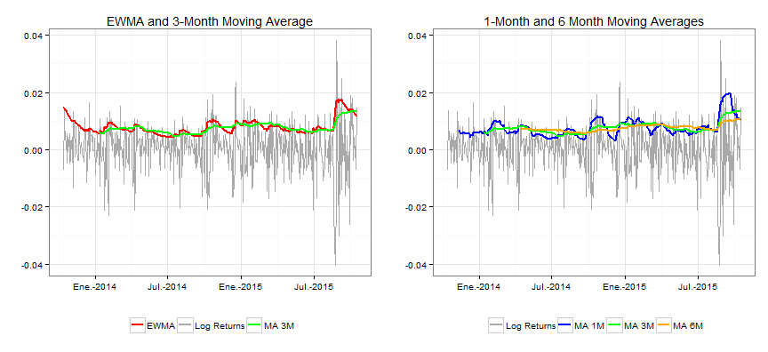

- Financial asset prices are stochastic processes
- Most price stochastic models are based on modeling price variation
- An important model component on measuring price variation is volatility.
- To see some volatility estimation measures, close price data from the SP500 index in a span of two years will be used.
- This data can be downloaded here
Historical Volatility Analysis of The SP500 Index
Different Estimation Methods
Antonio Rene Hernandez
Variation of Prices of Financial Assets
Price behaviour
- Price behaviour is modeled as geometric brownian motion (GBM), which graphically looks lag a jigsaw path with some trend.
- In modeling GBM, the logartithmic returns (logreturns), calculated as the difference between the logatithm of price at one time and the previous, are an esential part of them

Logarithmic returns
- When graphing logreturns, it can be seen that it follows an apparent stationary process in certain lapses of time. The distribution of this logreturns approximates to a normal distribution.

Volatility and its Estimation
- Volatility is the standard deviation of this distribution.
- Volatility varies through time. Some simple measures are obtained through smoothing, being exponential weighted average and moving averages. Differences between this measures can be observed in the following graphs.
